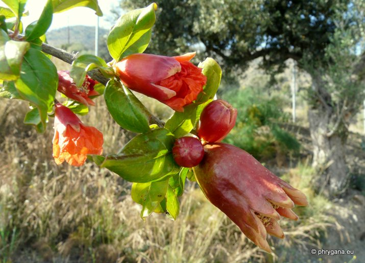
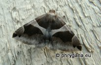
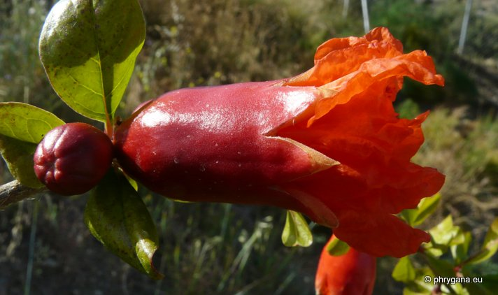
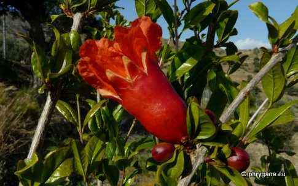
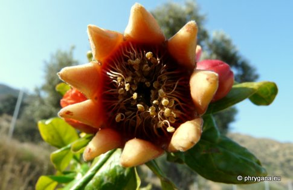
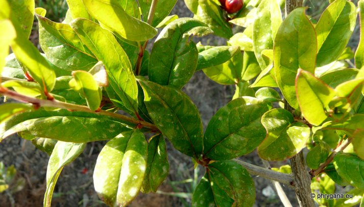
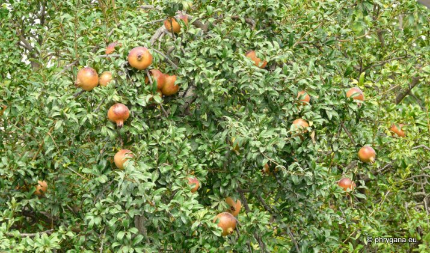

| PHRYGANA | Fauna | Flora | Galles | liste des espèces |
contact -
info - commentaires phrygana1 (at) gmail.com |
| Particularités crétoises | nouveautés | Mines | ressources naturelles |
| Punica granatum L. |
| 377 | Flora | LYTHRACEAE | Punica L. |
|  Punica granatum Agios Giorgos (Melambes) 10 avril 2010 |
| Pomegranate -- le Grenadier -- Granatapfelbaum | |
| Arbre ou arbuste glabre souvent épineux | |
| Feuilles: opposées, ovales à lancéolées, caduques, longues de 20 à 80 mm, entières, vert brillant; pétiole court | |
| Tige: glabre, quadrangulaire à l'état jeune; écorce gris brun | |
| Fleurs: pétales (5 - 6) plus ou moins chiffonés, rouge écarlate; calice charnu, à l'aspect cireux, rouge vif; nombreuses étamines; sépales persistants | |
| Fruit: globuleux en forme de pomme, jusqu'à 80 mm, avec la peau coriace, brun rougeâtre; nombreuses graines entourées d'une pulpe juteuse et translucide, plus ou moins colorée | |
| Hauteur: 300 - 500 cm | Type biologique: microphanérophyte caducifoliée |
| Floraison: mai juin juillet | |
| Altitudes: 0 - 800 m | |
| Statut en Crète: cultivé, parfois subspontané | |
| Biotopes en Crète: jardins, parcs, terrains vagues, bords de route | |
| Distribution: région Méditerranéenne, Europe de l'ouest côtière, Asie mineure | |
| Usage culinaire en Crète: espèce cultivée pour ses fruits: il existe de nombreux cultivars; également des formes naines ou à fleurs doubles | |
| Plante-hôte pour: | ||
|  | ||
| Dysgonia algira | ||
|
 Punica granatum Agios Giorgos (Melambes) 10 avril 2010 |
|

 Punica granatum Agios Giorgos (Melambes) 10 avril 2010 |
|
 Punica granatum Agios Giorgos (Melambes) 10 avril 2010 |
|
 Punica granatum Tymbaki 01 octobre 2010 |
| 01 juin 2013 |
| © paul fontaine -- © Phrygana.eu 2007 -- 2013 |